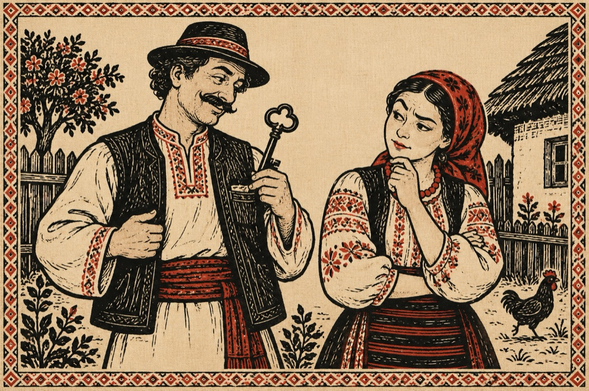

Văsălie spune drept
Dar mă rog tu ce-ai în jeb
Trojni-mar de mă pricep
Țâ-i teamă că o zbura
De țâi mâna strâns pâ ea?
Tu Mărie, tu năroadă
Ai ajuns să fii iscoadă
Ce am eu în jeb
Nu treb’e ca să întrebi.
Eu am cheia de la broască
Domnul să te alduiască
Nu-i ceva dă spăriet
E-o treabă de descuiet.
De nu îți strângi poalele
Țâ să umflă foalele
Și-o să zâcă mumăta
C-ai mâncat oare ceva!
Înțelesu-mai o ba?...
Vasile Groza